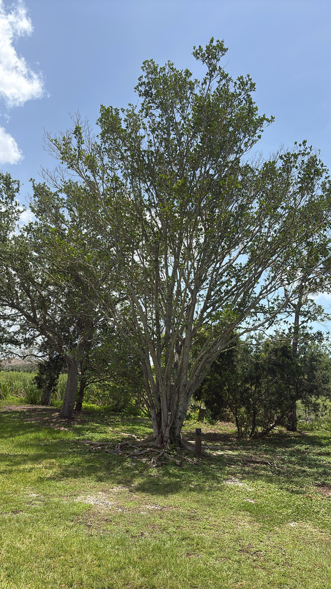

- Starts life as a seed deposited by a bird in the fork or bark of another tree. Sends roots downward. Over years those roots reach the soil, thicken, and gradually enclose the host trunk. The host eventually dies, leaving the fig standing hollow around where it used to be.
- Figs do not flower in the conventional sense. The flowers are inside the fruit — the fig is a hollow structure lined with tiny flowers. A specific species of wasp enters through a small opening to pollinate them, then dies inside. There are no Ficus without fig wasps.
- Florida Strangler Fig is the native species — distinct from the various ornamental figs sold in nurseries.
- Provides more wildlife value per tree than almost any other Florida native.
Native to Florida, the Caribbean, southern Mexico, and Central America. Found in hammocks and along waterways throughout the Florida peninsula. Member of Moraceae — the mulberry family. Florida's only native strangler fig.
- The strangler fig's growth strategy is one of the more dramatic in the plant kingdom, and it plays out slowly enough that most people never watch a complete cycle. A bird deposits a seed in the canopy of a host tree. The seedling sends aerial roots downward toward the soil while drawing nutrients from the host bark and from rainwater and debris.
- Once the roots reach the ground, the fig grows rapidly, the roots thicken and anastomose — fuse together — gradually enclosing the host trunk in a lattice of fig wood. The host tree, unable to expand its trunk against the fig's grip, eventually dies. The fig stands hollow at the center, having used a living tree as its scaffold.
- Figs are also unusual in their reproductive biology. What appears to be a fruit is technically a syconium — a hollow structure lined on the inside with hundreds of tiny flowers. A species-specific fig wasp enters through a small opening at the tip, pollinates the flowers, lays eggs, and dies inside. The male wasps hatch first, mate with females, and cut exit holes before dying.
- The females emerge carrying pollen and seek another fig to enter. No Ficus species can reproduce without its specific wasp partner.
- As a keystone species in Florida hammocks, the fig produces fruit in multiple crops throughout the year, providing food when other trees are not fruiting.
One of the most wildlife-productive trees in the Florida native plant palette. The small figs ripen in multiple crops throughout the year and are eaten by more than 60 species of birds in Florida alone — including many migratory species that time their passage through the state to coincide with fig fruiting. Raccoons, squirrels, and opossums also eat the fruit.
The large spreading canopy provides nesting and roosting structure for birds and small mammals. The hollow trunk of a mature strangler fig often becomes habitat for owls, bats, and cavity-nesting birds.
Because it fruits year-round rather than seasonally, the Strangler Fig functions as a baseline food source that supports wildlife through periods when other food plants are dormant.
Small, round, green ripening to yellow-orange to red, produced year-round in multiple crops. Eaten by a wide range of wildlife. Each fig is technically a syconium — a hollow structure lined with flowers, pollinated by a specific fig wasp that enters and dies inside.
Oval to oblong, leathery, dark glossy green. Evergreen. Smooth margin.
Long, rope-like roots descending from branches and trunk, characteristic of the species. On mature trees these fuse together forming a distinctive lattice structure around what was once the host trunk.
White sap from cut stems or leaves. Mild skin irritant; avoid contact with eyes.
Large evergreen tree to 50 to 100 feet. Broad spreading canopy. Often hollow at the center on old specimens.
The aerial roots descending from branches are the year-round identification feature. The small figs in various stages of ripening throughout the year. The hollow center on very old trees.
The milky latex from cut stems is a mild skin and eye irritant — wash your hands after handling and avoid touching your eyes. It isn't seriously toxic.
The small figs are edible and were eaten by Florida's Indigenous peoples.
For pets, the figs aren't toxic, but the latex warrants some caution around dogs that chew stems.


- © Randall Carter (CC-BY-NC), via iNaturalist